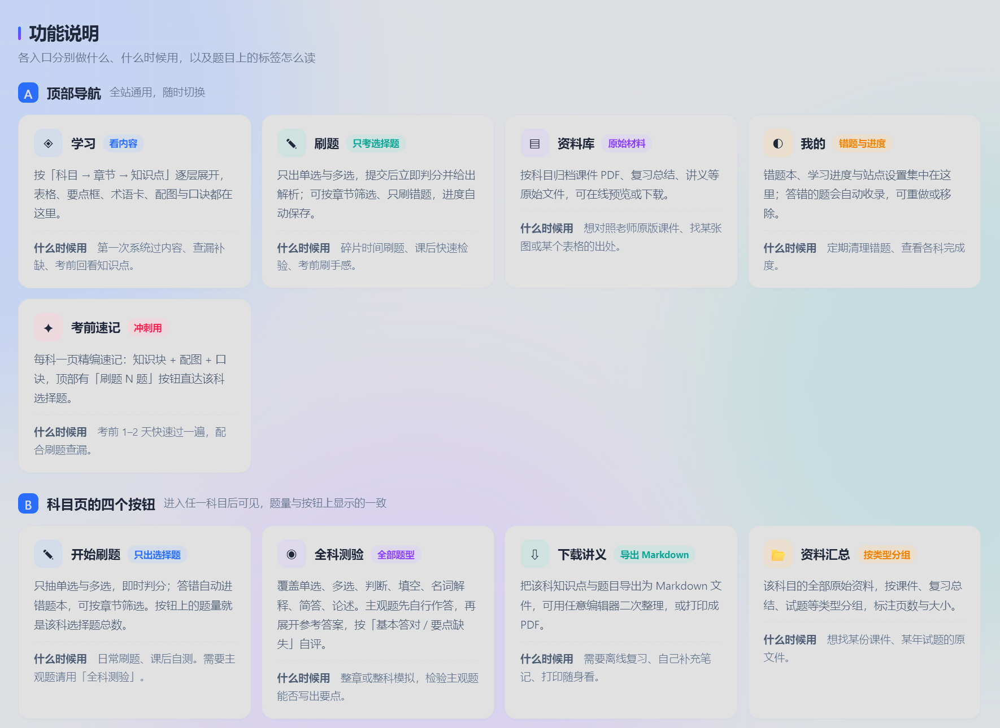
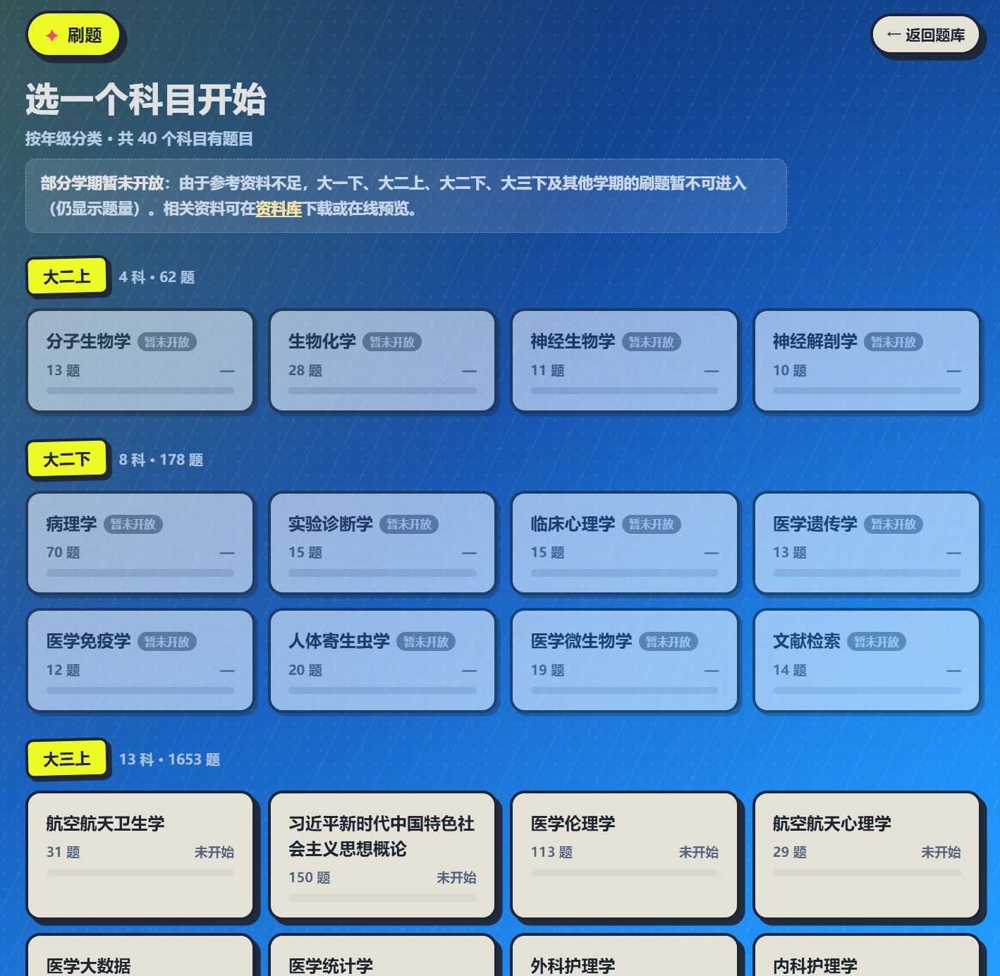
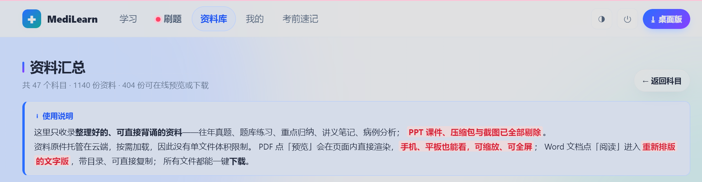
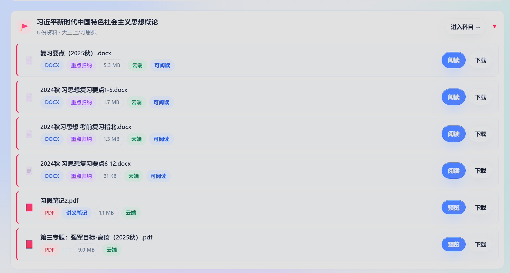
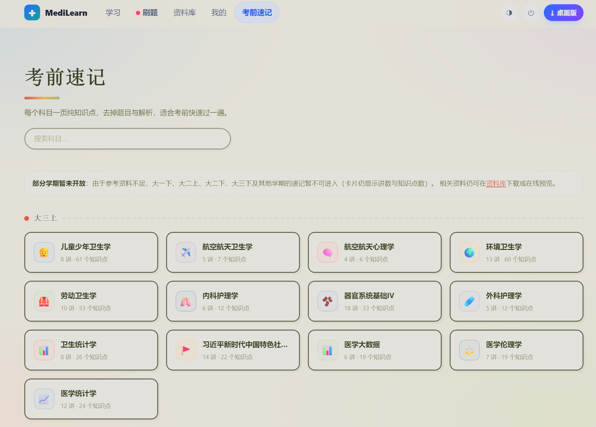
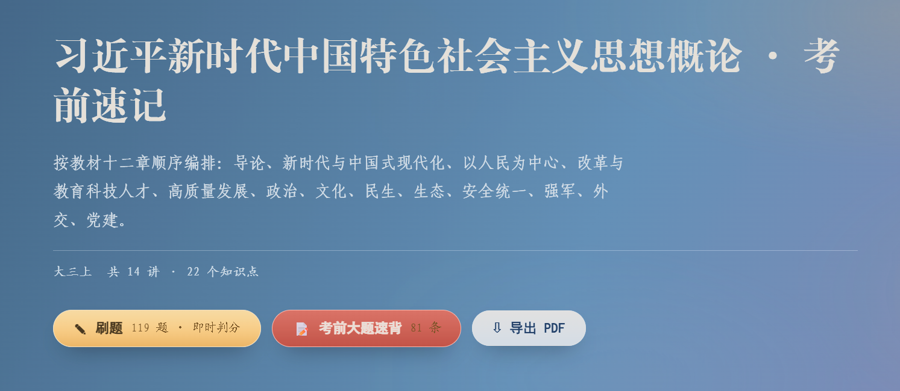
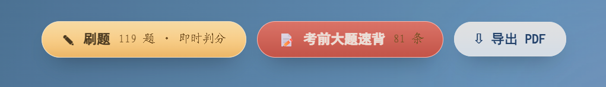
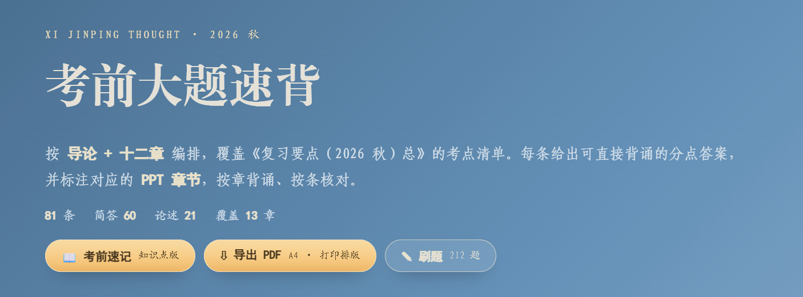

01
三分钟上手
先记住一句话：平时用「学习」看知识点，「刷题」检验，「资料库」查原件；考前用「考前速记」和「考前大题速背」冲刺。
打开站点后，顶部有五个入口，各管一件事：

| 入口 | 做什么 | 什么时候用 |
|---|---|---|
| 学习 | 按「科目 → 章节 → 知识点」逐层展开，表格、要点框、术语卡、配图都在这里 | 系统过内容、查漏补缺 |
| 刷题 | 只出单选与多选，提交后立即判分并给解析 | 课后自测、碎片时间刷题 |
| 资料库 | 课件 PDF、复习总结、讲义等原始文件，可在线预览或下载 | 想对照老师原版课件 |
| 我的 | 错题本、学习进度、站点设置 | 定期清理错题、看完成度 |
| 考前速记 | 每科一页纯知识点，去掉题目与解析 | 考前 1–2 天快速过一遍 |
一句话路线先「学习」过一遍 → 用「刷题」找漏洞 → 错题本反复刷 → 考前看「速记」＋「大题速背」。
02
学习：怎么找知识点
进入科目后，左侧是章节目录，右侧是正文；滚动时目录会自动跟随当前章节。
- 选科目首页「全部科目」或顶部「学习」，点卡片进入。
- 选章节左侧目录按「第 01 讲 / 第 02 讲」排列，点一下就跳转。
- 看正文每个知识点包含：要点框、表格、术语卡、配图，重点句已加粗。
- 进下一步科目页有四个按钮：开始刷题、全科测验、下载讲义、资料汇总（见图 1 下半部分）。
小技巧左侧目录支持搜索框（部分页面），输入关键词可直接跳到对应知识点；手机端目录在正文上方，点「章节目录」展开。
03
刷题：从选科目到错题本
刷题只出选择题（单选 / 多选），主观题在「全科测验」里。

- 选科目按年级分组，卡片上写着选择题数量与完成度。
- 答题单选点选项即判分；多选选完后点「确认作答」。
- 看解析判分后展开解析，标出正确答案与每个选项的对错原因。
- 进错题本答错自动收录；工具栏点「只刷错题」进入错题本练习。
错题本怎么用
- 只刷错题：进入的是独立会话，只包含错题，且会自动清掉章节筛选。
- 答对后可移出：解析区会出现「✓ 移出错题本」，由你决定是否移出（不再自动删除）。
- 刷新即重置：错题本里的答题记录不写回主进度，刷新页面回到未作答；主刷题页面的进度不受影响。
- 与收藏夹互斥：开错题本会自动关收藏夹，反之亦然。
注意「只刷错题」和主刷题是两套状态：在错题本里答对，不会改变主页面那道题的「已答」记录。
04
资料库：查原始课件
这里放的是老师发的原始文件，按科目归档，支持在线预览与下载。


- PDF：点「预览」直接在页面内渲染，手机、平板都能看，可缩放、可全屏。
- Word 文档：点「阅读」进入重新排版的文字版，带目录、可直接复制。
- 下载：所有文件都能一键下载到本地。
提示资料库只放整理好的、可直接背诵的材料——往年真题、题库练习、重点归纳、讲义笔记、病例分析；PPT 课件、压缩包与截图已全部删除，避免堆积。
05
考前速记：一页过完一科
去掉题目与解析，只留知识点，适合考前快速过一遍。



- 刷题 N 题：直达该科选择题，数量就是选择题总数。
- 考前大题速背：只有整理过大题的科目才有（目前习思想、器官系统基础IV）。
- 导出 PDF：按 A4 排版打印，适合打印随身看。
06
考前大题速背：分点背诵
把「简答 / 论述」按考点拆成分点答案，标注来源，直接背。

- 按章过左侧章节目录，点章节跳到对应题目组。
- 背分点每题 3–6 个分点，加粗处是采分关键词；论述题在分点后展开。
- 核对来源每题末尾标「第 X 章 PPT」，可回到资料库对照原课件。
- 导出点「导出 PDF」→ 打印对话框里选「另存为 PDF」，每章另起一页，题卡不跨页。
背诵顺序建议先背导论与第一、二章（总论），再按章推进；第十章条目最多，按「强军思想—党的领导—强军目标—备战—现代化—改革—战略体系—方法论」顺序过。
07
我的：进度与设置
顶部「我的」集中管理错题本、学习进度与站点设置。
- 错题本：按科目列出所有错题，可点进去重做，也可手动移除。
- 学习进度：每个科目显示已学知识点比例，首页卡片同步显示。
- 设置：深色/浅色主题切换、退出登录、桌面版下载。
换设备怎么办进度与错题保存在浏览器本地（localStorage），换浏览器或清缓存会丢失；重要进度建议定期截图或导出。
08
常见问题
为什么有的学期是灰色的、点不动？
目前只开放大三上。其他学期因为参考资料不足，学习功能暂时关闭，但科目简介、章数、知识点数、题量仍然显示；相关资料仍可在资料库下载或在线预览。
改了内容，刷新后还是旧的？
站点用了离线缓存（Service Worker）。在页面上按 Ctrl + Shift + R 强制刷新即可；手机端可在浏览器设置里清除站点数据。
手机上能用吗？
可以。页面自适应手机，底部有「首页 / 学习 / 刷题 / 资料」标签栏；速记页的目录在正文上方，点开即可跳转。
错题本里的题为什么刷新后回到未作答？
这是刻意设计：错题本是独立会话，答题记录不写回主进度，刷新即重置，方便反复刷同一批错题而不污染主页面。
「导出 PDF」点了没反应？
它会唤起浏览器打印对话框，请在「目标打印机」里选择「另存为 PDF」，再点保存。手机上选择「存储为 PDF」或「打印为 PDF」。
资料库里的文件能直接背吗？
资料库是原始材料（讲义、总结、真题）。想直接背，用「考前速记」（纯知识点）和「考前大题速背」（分点答案）更省时间。
MediLearn 使用教程 · 2026 秋